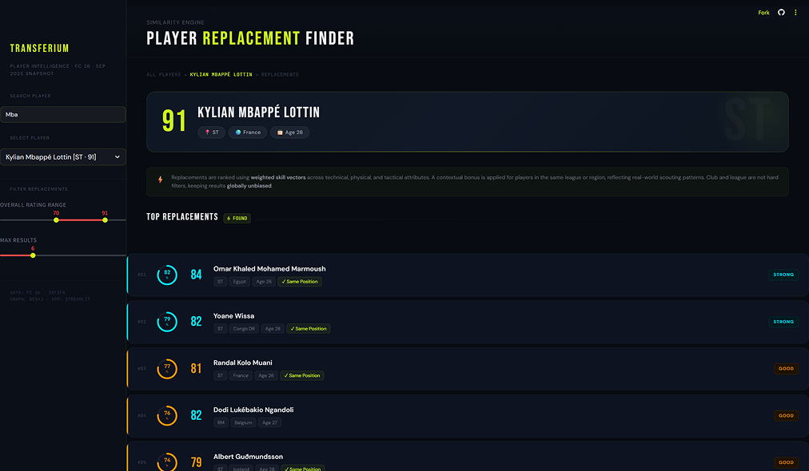
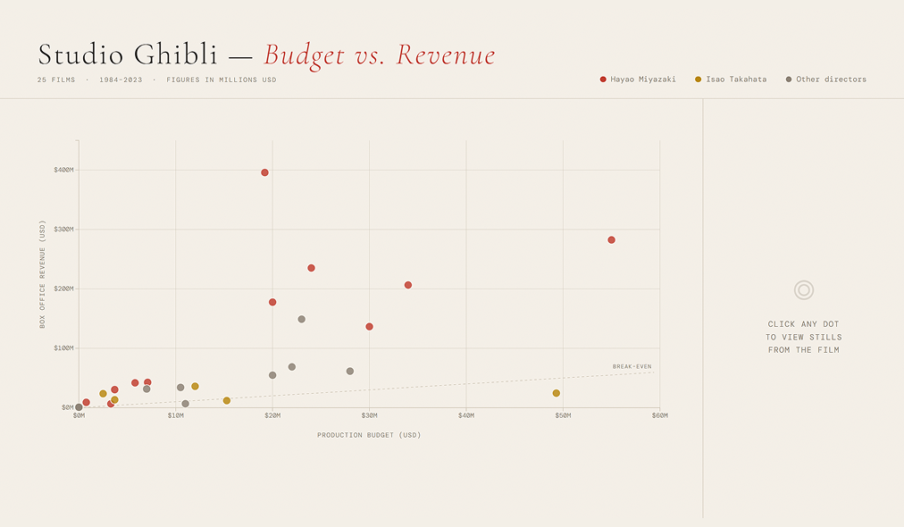
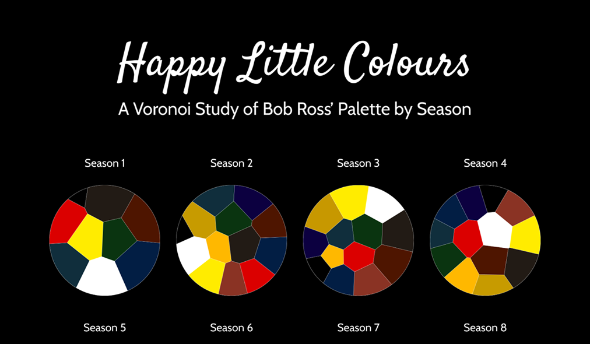
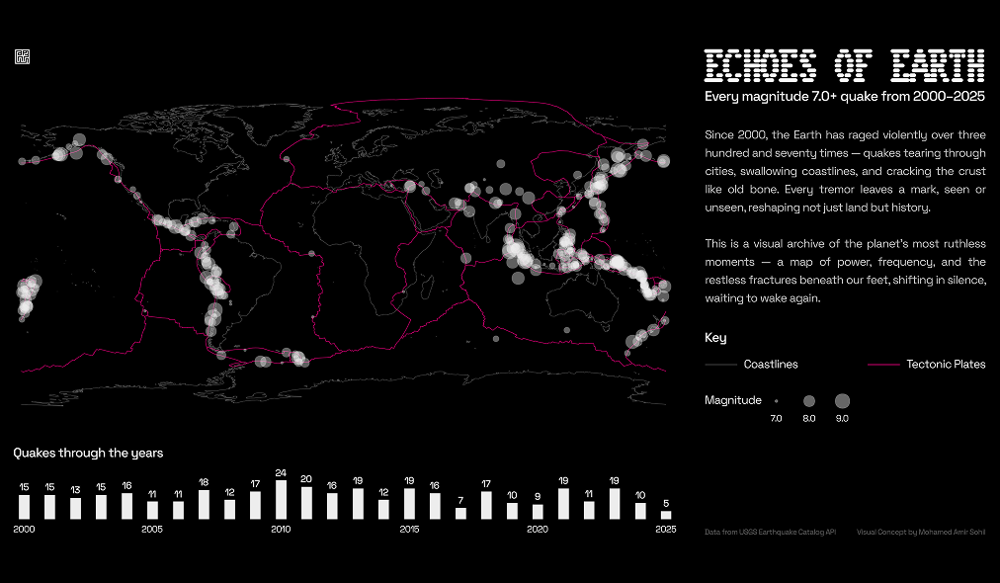
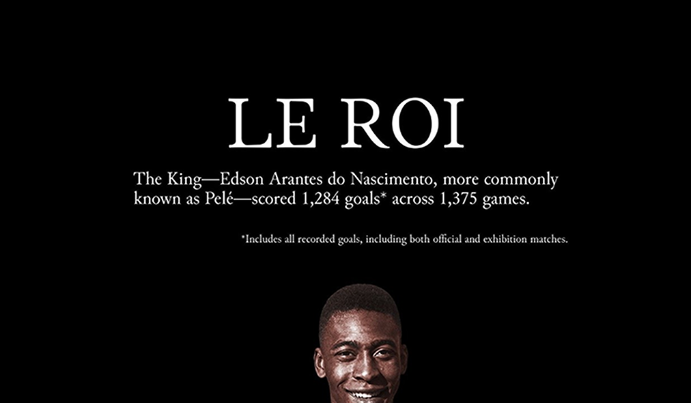
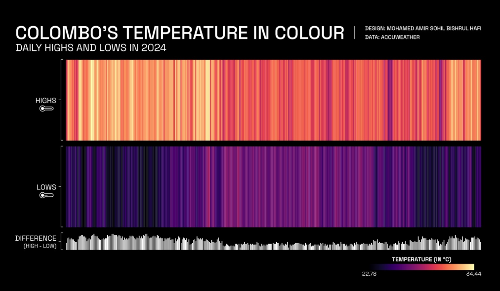
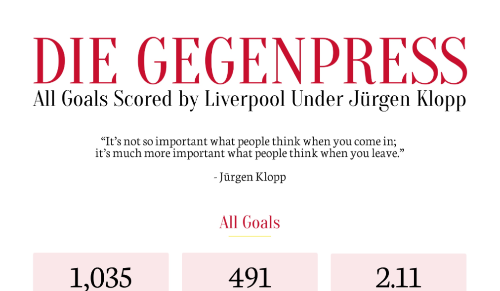
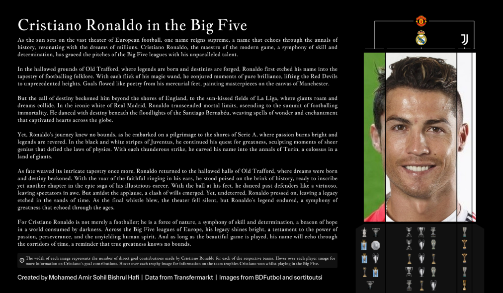
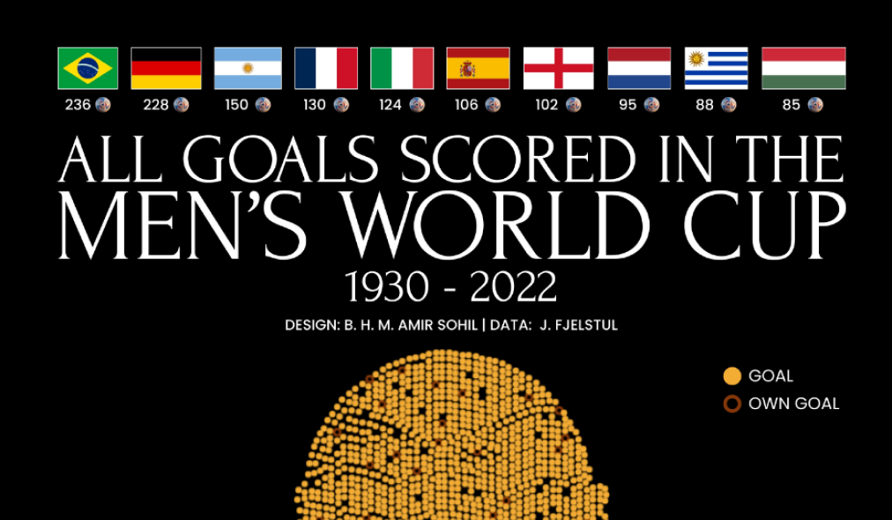

Transferium Player Intelligence
A graph database-powered football player replacement finder built on Neo4j, Python,
and Streamlit. Searches 18,405 FC 26 players using a weighted cosine similarity engine to surface
statistically compatible replacements by position and playing style.
See more

Studio Ghibli — Budget vs. Revenue
Exploring 40 years of Studio Ghibli films through an interactive budget-versus-revenue scatterplot.
Featuring rich tooltips, film stills, and a break-even reference, and designed to make financial data feel cinematic.
See more

Happy Little Colours
A season-by-season visual exploration of Bob Ross' iconic painting palette, transforming his most-used
hues into a Voronoi art piece that highlights how his colour preferences evolved across 31 seasons of The Joy of Painting.
See more

Echoes of Earth
A global map of every magnitude 7.0+ earthquake from 2000–2025, plotted against coastlines and tectonic
boundaries.
See more

Le Roi
A minimalist tribute to Pelé's historic 1,284-goal career, utilising a dense gold-toned grid where
every square marks a match.
See more

Colombo's Temperature In Colour
A colour-driven portrait of Colombo's 2024 climate, mapping every day's high and low as vertical heat-stripes.
Warm oranges contrast with cool violets, turning a year of weather into a single, striking visual gradient.
See more

Die Gegenpress
A comprehensive, interactive visual archive of every goal scored by Liverpool under Jürgen Klopp. From scorers
and opponents to venues and minute-by-minute patterns, this piece distills nine years of gegenpressing football into a clean, story-driven
data experience.
See more

Cristiano in the Big Five
A sweeping, narrative-driven visual exploring Cristiano Ronaldo's journey across Europe's Big Five leagues. This
piece blends storytelling, club symbolism, and trophy data to showcase the evolution of an icon whose impact transcends borders, eras,
and footballing cultures.
See more

All Goals in the Men's World Cup
A striking data-art visualisation of every goal ever scored in the Men's World Cup from 1930–2022. Using
the iconic trophy as its canvas, this piece blends history, interactivity, and storytelling to illuminate 92 years of football's most celebrated moments.
See more